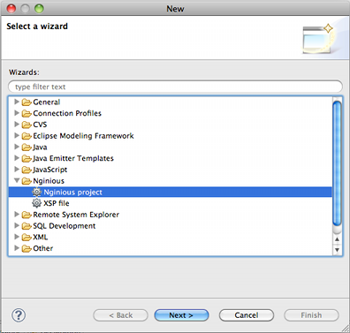
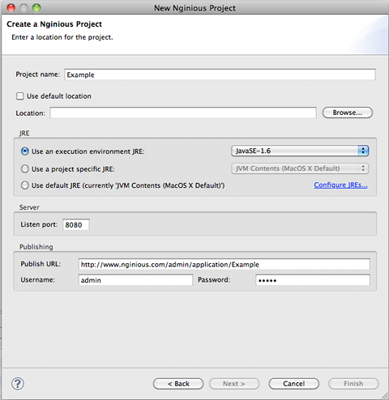
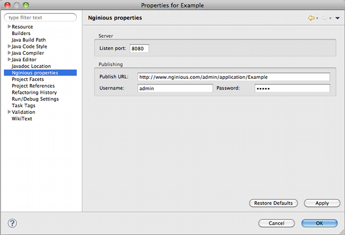
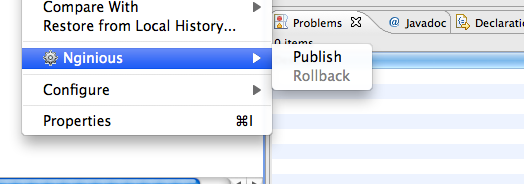

Nginious provides an Eclipse plugin which integrates the Nginious server into the development environment of Eclipse. With the plugin its possible to create Java projects with a layout specifically tailored for Nginious.
A server is run inside Eclipse for each open Nginious project. Any changes to resources or recompiled Java classes are instantly available in the server. Changes to HTTP services or XSP file are visible immediately when a browser is reloaded, without the need to redeploy or restart.
Deployment functions are also available making it possible to deploy a Nginious project to a remote server with a simple menu command.
Below is a table describing the layout of a Nginious project in Eclipse.
| Name | Description |
| src | Directory where all Java source files are located. |
| WebContent | Root directory of web application being developed. |
| WebContent/WEB-INF/classes |
Directory compiled Java classes. All Java source files found in the src
directory are compiled into this directory.
|
| WebContent/WEB-INF/lib | External jar libraries are placed into this directory when added to the project. |
| WebContent/WEB-INF/xsp | Location of XSP templates. |
| WebContent/* |
Any other directories created within the WebContent directory are regarded
as static content and served as static content by the server.
|
To create a new Nginious project select the Nginious project wizard from the
File ->New menu. See image below.

Enter project information in the New Nginious project wizard.

To set properties for a Nginous project, select the Project -> Properties menu item or
right click on the project and select Properties from the menu. The same project properties
can be set as in the new project wizard.

To publish a project to the configured remote Nginious server select the
Project -> Nginious -> Publish menu item or right click on the project and select
Nginious -> Publish. A progress bar is displayed that shows the progress of the publish
operation.
"
A published version of the project can be rolled back to the previous version if problems or errors are
discovered. Select the Project -> Nginious -> Publish menu item or right click on the project
and select Nginious -> Publish item.